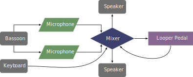

This piece was commissioned by Rachael Elliott in 2021 and was premiered at the International Double Reed Society Virtual Symposium that same year. This piece can be obtained by contacting the composer at her website.
Similar to Fort Greene, this piece has multiple performance modes. It can be done with a looper, or with two bassoons and a keyboard. The looper needs to be able to record a long loop, around three minutes and thirty seconds. Rachael Elliott used the Boomerang III Phrase Sampler for her performance of this piece. If the performer uses two microphones, there will need to be a mixer or audio interface to combine the two signals to send to the pedal and to route that signal to the speakers. Additionally, the keyboard signal needs to be combined with the bassoon signal before going to the looper.
The recommended performance diagram is shown below. 
The technical aspects of this piece are where the difficulty lies. The rhythms and tempo are not the issue, but rather the fingerings themselves. The performer has to switch between normal, muted, and cloaked fingerings. The fingerings are all included in a diagram at the end of the piece. The diagrams are easy to understand, but in the music itself there are only descriptions of the keys to add to each note. The main difficulty is remembering the various fingerings throughout the piece. The electronics for this piece are fairly simple, just a loop pedal that gets triggered every three and a half minutes. The difficulty is in syncing a loop for three and a half minutes each time. This could be a great piece for a student that is interested in exploring timbral fingerings for the bassoon in addition to electronics.
This piece is fairly slow and really explores the different timbres of the various fingerings. It has very little in the way of a traditional melody and likely would appeal more to avant-garde audiences.
©2024 by Benjamin Bradshaw
Logo ©2024 by Hannah Bradshaw